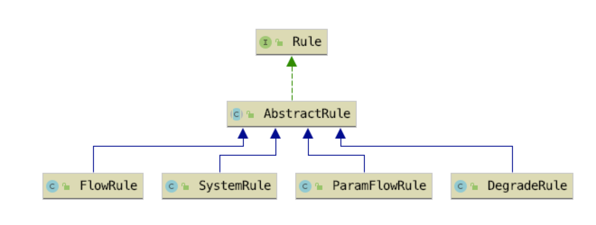

- 01 开篇词：一次服务雪崩问题排查经历.md.html
- 02 为什么需要服务降级以及常见的几种降级方式.md.html
- 03 为什么选择 Sentinel，Sentinel 与 Hystrix 的对比.md.html
- 04 Sentinel 基于滑动窗口的实时指标数据统计.md.html
- 05 Sentinel 的一些概念与核心类介绍.md.html
- 06 Sentinel 中的责任链模式与 Sentinel 的整体工作流程.md.html
- 07 Java SPI 及 SPI 在 Sentinel 中的应用.md.html
- 08 资源指标数据统计的实现全解析（上）.md.html
- 09 资源指标数据统计的实现全解析（下）.md.html
- 10 限流降级与流量效果控制器（上）.md.html
- 11 限流降级与流量效果控制器（中）.md.html
- 12 限流降级与流量效果控制器（下）.md.html
- 13 熔断降级与系统自适应限流.md.html
- 14 黑白名单限流与热点参数限流.md.html
- 15 自定义 ProcessorSlot 实现开关降级.md.html
- 16 Sentinel 动态数据源：规则动态配置.md.html
- 17 Sentinel 主流框架适配.md.html
- 18 Sentinel 集群限流的实现（上）.md.html
- 19 Sentinel 集群限流的实现（下）.md.html
- 20 结束语：Sentinel 对应用的性能影响如何？.md.html
- 21 番外篇：Sentinel 1.8.0 熔断降级新特性解读.md.html
10 限流降级与流量效果控制器（上）
从这篇开始，我们学习 Sentinel 提供的几个实现降级功能的 ProcessorSlot，这些 ProcessorSlot 检查实时指标数据是否达到规则所配置的阈值，当达到阈值时，或抛出 Block 异常或采取流量效果控制策略处理超阈值的流量。
Sentinel 实现限流降级、熔断降级、黑白名单限流降级、系统自适应限流降级以及热点参数限流降级都是由 ProcessorSlot、Checker、Rule、RuleManager 组合完成。ProcessorSlot 作为调用链路的切入点，负责调用 Checker 检查当前请求是否可以放行；Checker 则根据资源名称从 RuleManager 中拿到为该资源配置的 Rule（规则），取 ClusterNode 统计的实时指标数据与规则对比，如果达到规则的阈值则抛出 Block 异常，抛出 Block 异常意味着请求被拒绝，也就实现了限流或熔断。
可以总结为以下三个步骤：
- 在 ProcessorSlot#entry 方法中调用 Checker#check 方法，并将 DefaultNode 传递给 Checker。
- Checker 从 DefaultNode 拿到 ClusterNode，并根据资源名称从 RuleManager 获取为该资源配置的规则。
- Checker 从 ClusterNode 中获取当前时间窗口的某项指标数据（QPS、avgRt 等）与规则的阈值对比，如果达到规则的阈值则抛出 Block 异常（也有可能将 check 交给 Rule 去实现）。
限流规则与规则配置加载器
Sentinel 在最初的框架设计上，将是否允许请求通过的判断行为交给 Rule 去实现，所以将 Rule 定义成了接口。Rule 接口只定义了一个 passCheck 方法，即判断当前请求是否允许通过。Rule 接口的定义如下：
public interface Rule {
boolean passCheck(Context context, DefaultNode node, int count, Object... args);
}
- context：当前调用链路上下文。
- node：当前资源的 DefaultNode。
- count：一般为 1，用在令牌桶算法中表示需要申请的令牌数，用在 QPS 统计中表示一个请求。
- args：方法调用参数（被 Sentinel 拦截的目标方法），用于实现热点参数限流降级的。
因为规则是围绕资源配置的，一个规则只对某个资源起作用，因此 Sentinel 提供了一个抽象规则配置类 AbstractRule，AbstractRule 的定义如下：
public abstract class AbstractRule implements Rule {
private String resource;
private String limitApp;
// ....
}
- resource：资源名称，规则的作用对象。
- limitApp：只对哪个或者哪些调用来源生效，若为 default 则不区分调用来源。
Rule、AbstractRule 与其它实现类的关系如下图所示：

FlowRule 是限流规则配置类，FlowRule 继承 AbstractRule 并实现 Rule 接口。FlowRule 源码如下，非完整源码，与实现集群限流相关的字段暂时去掉了。
public class FlowRule extends AbstractRule {
// 限流阈值类型 qps|threads
private int grade = RuleConstant.FLOW_GRADE_QPS;
// 限流阈值
private double count;
// 基于调用关系的限流策略
private int strategy = RuleConstant.STRATEGY_DIRECT;
// 配置 strategy 使用，入口资源名称
private String refResource;
// 流量控制效果（直接拒绝、Warm Up、匀速排队）
private int controlBehavior = RuleConstant.CONTROL_BEHAVIOR_DEFAULT;
// 冷启动时长（预热时长），单位秒
private int warmUpPeriodSec = 10;
// 最大排队时间。
private int maxQueueingTimeMs = 500;
// 流量控制器
private TrafficShapingController controller;
//.....
@Override
public boolean passCheck(Context context, DefaultNode node, int acquireCount, Object... args) {
return true;
}
}
- FlowRule 的字段解析已在源码中给出注释，现在还不需要急于去理解每个字段的作用。
- FlowRule 实现 Rule 接口方法只是返回 true，因为 passCheck 的逻辑并不由 FlowRule 实现。
Rule 定义的行为应该只是 Sentinel 在最初搭建框架时定义的约定，Sentinel 自己也并没有都遵守这个约定，很多规则并没有将 passCheck 交给 Rule 去实现，Checker 可能是后续引入的，用于替代 Rule 的 passCheck 行为。
Sentinel 中用来管理规则配置的类都以规则类的名称+Manger 命名，除此之外，并没有对规则管理器有什么行为上的约束。
用来加载限流规则配置以及缓存限流规则配置的类为 FlowRuleManager，其部分源码如下：
public class FlowRuleManager {
// 缓存规则
private static final Map<String, List<FlowRule>> flowRules = new ConcurrentHashMap<String, List<FlowRule>>();
// 获取所有规则
static Map<String, List<FlowRule>> getFlowRuleMap() {
return flowRules;
}
// 更新规则
public static void loadRules(List<FlowRule> rules) {
// 更新静态字段 flowRules
}
}
- flowRules 静态字段：用于缓存规则配置，使用 ConcurrentMap 缓存，key 为资源的名称，value 是一个 FlowRule 数组。使用数组是因为 Sentinel 支持针对同一个资源配置多种限流规则，只要其中一个先达到限流的阈值就会触发限流。
- loadRules：提供给使用者加载和更新规则的 API，该方法会将参数传递进来的规则数组转为 Map，然后先清空 flowRules 当前缓存的规则配置，再将新的规则配置写入 flowRules。
- getFlowRuleMap：提供给 FlowSlot 获取配置的私有 API。
限流处理器插槽：FlowSlot
FlowSlot 是实现限流功能的切入点，它作为 ProcessorSlot 插入到 ProcessorSlotChain 链表中，在 entry 方法中调用 Checker 去判断是否需要拒绝当前请求，如果需要拒绝请求则抛出 Block 异常。FlowSlot 的源码如下：
public class FlowSlot extends AbstractLinkedProcessorSlot<DefaultNode> {
private final FlowRuleChecker checker;
public FlowSlot() {
this(new FlowRuleChecker());
}
// 规则生产者，一个 Function
private final Function<String, Collection<FlowRule>> ruleProvider = new Function<String, Collection<FlowRule>>() {
// 参数为资源名称
@Override
public Collection<FlowRule> apply(String resource) {
Map<String, List<FlowRule>> flowRules = FlowRuleManager.getFlowRuleMap();
return flowRules.get(resource);
}
};
@Override
public void entry(Context context, ResourceWrapper resourceWrapper, DefaultNode node, int count,
boolean prioritized, Object... args) throws Throwable {
checkFlow(resourceWrapper, context, node, count, prioritized);
fireEntry(context, resourceWrapper, node, count, prioritized, args);
}
// check 是否限流
void checkFlow(ResourceWrapper resource, Context context, DefaultNode node, int count, boolean prioritized)
throws BlockException {
checker.checkFlow(ruleProvider, resource, context, node, count, prioritized);
}
@Override
public void exit(Context context, ResourceWrapper resourceWrapper, int count, Object... args) {
fireExit(context, resourceWrapper, count, args);
}
}
FlowSlot 在构造方法中创建 FlowRuleChecker，并在 entry 方法中调用 FlowRuleChecker#checkFlow 方法判断是否需要拦截当前请求。在调用 FlowRuleChecker#checkFlow 方法时传入了一个 Function 接口实例，FlowRuleChecker 可调用该 Function 的 apply 方法从 FlowRuleManager 获取资源的所有规则配置，当然，最终还是调用 FlowRuleManager#getFlowRuleMap 方法从 FlowRuleManager 获取。
限流规则检查器：FlowRuleChecker
FlowRuleChecker 与 FlowRuleManager 一样，Sentinel 也并没有约定 Checker 必须具有哪些行为，只是在命名上约定 Checker 类需以规则类的名称 + “Checker”命名。FlowRuleChecker 负责判断是否需要拒绝当前请求，由于 FlowRuleChecker 类的源码很多，所以我们按过程分析用到的每个方法。
首先是由 FlowSlot 调用的 checkFlow 方法，该方法源码如下：
public void checkFlow(Function<String, Collection<FlowRule>> ruleProvider, ResourceWrapper resource,
Context context, DefaultNode node, int count, boolean prioritized) throws BlockException {
if (ruleProvider == null || resource == null) {
return;
}
// (1)
Collection<FlowRule> rules = ruleProvider.apply(resource.getName());
if (rules != null) {
// (2)
for (FlowRule rule : rules) {
// (3)
if (!canPassCheck(rule, context, node, count, prioritized)) {
throw new FlowException(rule.getLimitApp(), rule);
}
}
}
}
checkFlow 方法我们分三步分析：
- 调用 FlowSlot 传递过来的 ruleProvider 的 apply 方法获取当前资源的所有限流规则；
- 遍历限流规则，只要有一个限流规则达到限流阈值即可抛出 FlowException，使用 FlowException 目的是标志当前请求因为达到限流阈值被拒绝，FlowException 是 BlockException 的子类；
- 调用 canPassCheck 方法判断当前请求是否允许通过。
canPassCheck 即“can pass check”，意思是检查是否允许通过，后面我们也统一将“检查是否允许当前请求通过”使用 canPassCheck 代指，canPassCheck 方法返回 true 说明允许请求通过，反之则不允许通过。canPassCheck 方法源码如下：
public boolean canPassCheck(FlowRule rule, Context context, DefaultNode node, int acquireCount,boolean prioritized) {
// (1)
String limitApp = rule.getLimitApp();
if (limitApp == null) {
return true;
}
// (2)
if (rule.isClusterMode()) {
return passClusterCheck(rule, context, node, acquireCount, prioritized);
}
// (3)
return passLocalCheck(rule, context, node, acquireCount, prioritized);
}
- 当前限流规则只对哪个调用来源生效，如果为 null 则返回 true，一般不为 null，默认为“default”（不限定调用来源）；
- 是否是集群限流模式，如果是集群限流模式则调用 passClusterCheck 方法完成 canPassCheck，我们暂时先不讨论集群限流的情况；
- 非集群限流模式则调用 passLocalCheck 方法完成 canPassCheck。
passLocalCheck 方法源码如下：
private static boolean passLocalCheck(FlowRule rule, Context context, DefaultNode node, int acquireCount,
boolean prioritized) {
// （1）
Node selectedNode = selectNodeByRequesterAndStrategy(rule, context, node);
if (selectedNode == null) {
return true;
}
// （2）
return rule.getRater()
// (3)
.canPass(selectedNode, acquireCount, prioritized);
}
- 根据调用来源和“调用关系限流策略”选择 DefaultNode；
- 获取限流规则配置的流量效果控制器（TrafficShapingController）；
- 调用 TrafficShapingController#canPass 方法完成 canPassCheck。
selectNodeByRequesterAndStrategy 方法的实现逻辑很复杂，实现根据限流规则配置的 limitApp 与 strategy 选择一个 StatisticNode，两个字段的组合情况可以有 6 种。selectNodeByRequesterAndStrategy 方法源码如下：
static Node selectNodeByRequesterAndStrategy(FlowRule rule, Context context, DefaultNode node) {
// 限流规则针对哪个来源生效
String limitApp = rule.getLimitApp();
// 基于调用关系的限流策略
int strategy = rule.getStrategy();
// 远程来源
String origin = context.getOrigin();
if (limitApp.equals(origin) && filterOrigin(origin)) {
if (strategy == RuleConstant.STRATEGY_DIRECT) {
//（1）
return context.getOriginNode();
}
//（2）
return selectReferenceNode(rule, context, node);
}
else if (RuleConstant.LIMIT_APP_DEFAULT.equals(limitApp)) {
if (strategy == RuleConstant.STRATEGY_DIRECT) {
//（3）
return node.getClusterNode();
}
//（4）
return selectReferenceNode(rule, context, node);
}
else if (RuleConstant.LIMIT_APP_OTHER.equals(limitApp)
&& FlowRuleManager.isOtherOrigin(origin, rule.getResource())) {
if (strategy == RuleConstant.STRATEGY_DIRECT) {
//（5）
return context.getOriginNode();
}
//（6）
return selectReferenceNode(rule, context, node);
}
return null;
}
如果当前限流规则的 limitApp 为 default，则说明该限流规则对任何调用来源都生效，针对所有调用来源限流，否则只针对指定调用来源限流。
\1. 如果调用来源与当前限流规则的 limitApp 相等，且 strategy 为 STRATEGY_DIRECT，则使用调用来源的 StatisticNode，实现针对调用来源限流。例如，当前服务名称为 demo-srv-b，请求调用来源为 demo-srv-a 服务，资源名称为“/hello”，那么 origin 的 StatisticNode 用于针对访问来源为 demo-srv-a 的“/hello”资源的指标数据统计。
\2. 前置条件与（1）相同，依然是针对来源限流。
- strategy 为 STRATEGY_RELATE：根据限流规则配置的 refResource 获取引用资源的 ClusterNode，即使用引用资源的指标数据限流。通俗点说就是使用其它资源的指标数据限流，你的并发量高我就限流，让你多处理一点请求，等你并发量降低了，我就不限流了；
- strategy 为 STRATEGY_CHAIN：使用当前资源的 DefauleNode，实现按调用链路的资源指标数据限流。
\3. 当 limitApp 为 default 时，针对所有来源限流。如果 strategy 为 STRATEGY_DIRECT，则使用当前资源的 ClusterNode。
\4. 前置条件与（3）相同，依然是针对所有来源限流。
- strategy 为 STRATEGY_RELATE：使用引用资源的 ClusterNode；
- strategy 为 STRATEGY_CHAIN：使用当前资源的 DefauleNode。
\5. 如果 limitApp 为 other，且该资源的所有限流规则都没有针对当前的调用来源限流。如果 strategy 为 STRATEGY_DIRECT，则使用 origin 的 StatisticNode。
\6. 前置条件与（5）一样。
- strategy 为 STRATEGY_RELATE：使用引用资源的 ClusterNode；
- strategy 为 STRATEGY_CHAIN：使用当前资源的 DefauleNode。
从 selectNodeByRequesterAndStrategy 方法可以看出，Sentinel 之所以针对每个资源统计访问来源的指标数据，也是为了实现对丰富的限流策略的支持。
因为每个调用来源服务对同一个资源的访问频率都是不同的，针对调用来源限流可限制并发量较高的来源服务的请求，而对并发量低的来源服务的请求可不限流，或者是对一些并没有那么重要的来源服务限流。
当两个资源之间具有资源争抢关系的时候，使用 STRATEGY_RELATE 调用关系限流策略可避免多个资源之间过度的对同一资源争抢。例如查询订单信息和用户下单两个分别读和写数据库订单表的资源，如下图所示。
我们可以给执行读表操作的资源设置限流规则实现写优先的目的，查询订单信息的资源根据用户下单的资源的实时指标数据限流，当写表操作过于频繁时，读表操作的请求就会被限流。